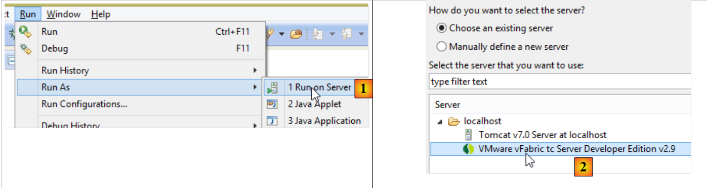
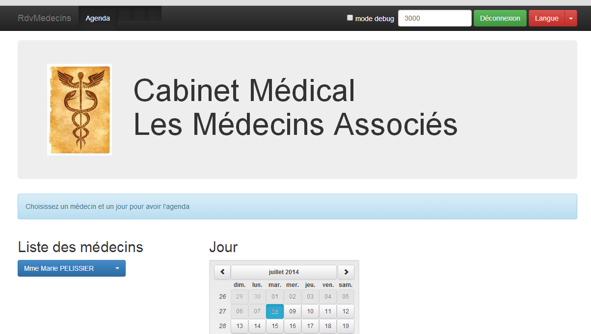
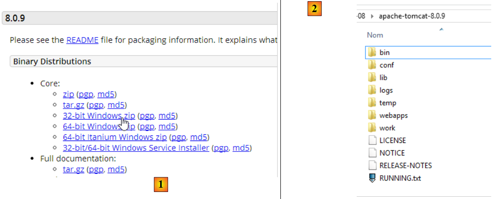
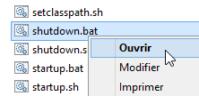
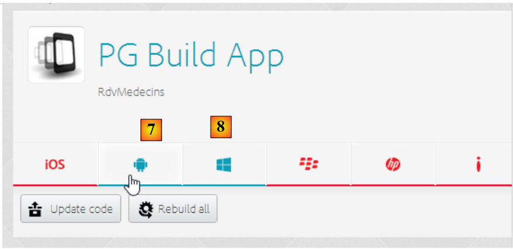
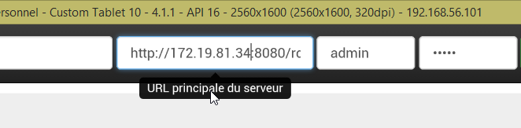

4. Betrieb der Anwendung
Wir möchten die Anwendung nun außerhalb von IDE, STS (für den Server) und Webstorm (für den Client) betreiben.
4.1. Bereitstellung des Webdienstes auf einem Tomcat-Server
In Abschnitt 2.11.9 haben wir gesehen, wie man ein WAR-Archiv für Tomcat erstellt. Wir wiederholen diesen Vorgang hier. Um die bestehenden Daten zu erhalten, duplizieren wir zunächst das Eclipse-Projekt [rdvmedecins-webapi-v3] in [rdvmedecins-webapi-v4].
 |
Die Datei [pom.xml] wird wie folgt geändert:
<modelVersion>4.0.0</modelVersion>
<groupId>istia.st.spring4.mvc</groupId>
<artifactId>rdvmedecins-webapi-v4</artifactId>
<version>0.0.1-SNAPSHOT</version>
<packaging>war</packaging>
<name>rdvmedecins-webapi-v3</name>
<description>Gestion de RV Médecins</description>
<parent>
<groupId>org.springframework.boot</groupId>
<artifactId>spring-boot-starter-parent</artifactId>
<version>1.0.0.RELEASE</version>
</parent>
<dependencies>
<dependency>
<groupId>org.springframework.boot</groupId>
<artifactId>spring-boot-starter-web</artifactId>
</dependency>
<dependency>
<groupId>org.springframework.boot</groupId>
<artifactId>spring-boot-starter-security</artifactId>
</dependency>
<dependency>
<groupId>org.springframework.boot</groupId>
<artifactId>spring-boot-starter-tomcat</artifactId>
<scope>provided</scope>
</dependency>
<dependency>
<groupId>istia.st.spring4.rdvmedecins</groupId>
<artifactId>rdvmedecins-metier-dao-v2</artifactId>
<version>0.0.1-SNAPSHOT</version>
</dependency>
</dependencies>
Die Änderungen müssen an zwei Stellen vorgenommen werden:
- Zeile 5: Es muss angegeben werden, dass ein WAR-Archiv (Web ARchive) generiert werden soll;
- Zeilen 23–27: Es muss eine Abhängigkeit zum Artefakt [spring-boot-starter-tomcat] hinzugefügt werden. Dieses Artefakt fügt alle Tomcat-Klassen in die Projektabhängigkeiten ein;
- Zeile 26: Dieses Artefakt ist [provided], d. h., die entsprechenden Archive werden nicht in die generierte WAR-Datei aufgenommen. Diese Archive befinden sich nämlich auf dem Tomcat-Server, auf dem die Anwendung ausgeführt wird;
Außerdem muss die Webanwendung konfiguriert werden. Da die Datei [web.xml] fehlt, erfolgt dies über eine Klasse, die von [SpringBootServletInitializer] erbt:
 |
Die Klasse [ApplicationInitializer] sieht wie folgt aus:
package rdvmedecins.web.config;
import org.springframework.boot.builder.SpringApplicationBuilder;
import org.springframework.boot.context.web.SpringBootServletInitializer;
public class ApplicationInitializer extends SpringBootServletInitializer {
@Override
protected SpringApplicationBuilder configure(SpringApplicationBuilder application) {
return application.sources(AppConfig.class);
}
}
- Zeile 6: Die Klasse [ApplicationInitializer] erweitert die Klasse [SpringBootServletInitializer];
- Zeile 8: Die Methode [configure] wird neu definiert (Zeile 7);
- Zeile 9: Es wird die Klasse [AppConfig] bereitgestellt, die das Projekt konfiguriert;
Anschließend muss möglicherweise das Maven-Projekt aktualisiert werden (ich musste dies tun): [clic droit sur projet / Maven / Update project] oder [Alt-F5].
Um das Projekt auszuführen, kann man wie folgt vorgehen:
 |
- Bei [1] führt man das Projekt auf einem der in IDE Eclipse registrierten Server aus;
- in [2] wählt man [tc Server Developer] aus, das standardmäßig vorhanden ist. Es handelt sich um eine Variante von Tomcat;
Man erhält folgendes Ergebnis:
 |
Das ist normal. Zur Erinnerung: Der Webdienst verfügt in seinen Methoden nicht über URL und [/]. Wenn man URL und [/getAllMedecins] ausprobiert, erhält man folgende Antwort:
 |
Das ist normal. Der Webdienst ist geschützt.
Starten wir nun den Client [rdvmedecins-angular-v2] in WebStorm:
 |
In [1] geben wir den URL des neuen Webdienstes [http://localhost:8080/rdvmedecins-webapi-v4] ein. Wir erhalten folgendes Ergebnis:

Um die Anwendung außerhalb von IDE STS auszuführen, gibt es verschiedene Möglichkeiten. Hier ist eine davon.
Laden Sie eine Version von Tomcat [http://tomcat.apache.org/download-80.cgi] (Juli 2014) herunter:
 |
Man wählt in [1] eine ZIP-Version aus und entpackt sie in [2]. Man kehrt zurück zu STS:
 |
- Auf der Registerkarte [Servers] klicken wir mit der rechten Maustaste auf die Anwendung [rdvmedecins-webapi-v4] und wählen die Option [Browse Deployment Location] aus;
- in [4]: Kopieren Sie den Ordner [rdvmedecins-webapi-v4];
 |
- in [5]: Fügen Sie den Ordner [rdvmedecins-webapi-v4] in den Ordner [webapps] von Tomcat ein;
- in [6] führen Sie die Skriptdatei [startup.bat] aus (der in STS integrierte Tomcat-Server muss zuvor beendet worden sein). Es öffnet sich ein Fenster mit der Bezeichnung DOS, in dem die Tomcat-Protokolle angezeigt werden. Diese sollten belegen, dass die Anwendung [rdvmedecins-webapi-v4] gestartet wurde.
Um dies zu überprüfen, führen Sie den Angular-Client [rdvmedecins-angular-v2] erneut in WebStorm aus:
 |
In [1] wird die URL des neuen Webdienstes [http://localhost:8080/rdvmedecins-webapi-v4] eingegeben. Man erhält folgendes Ergebnis:
4.2. Bereitstellung des Angular-Clients auf dem Tomcat-Server
Nachdem der Webdienst nun auf Tomcat bereitgestellt wurde, werden wir nun auch den Angular-Client auf einem Server bereitstellen. Dies kann durchaus derselbe Server sein, auf dem bereits der Webdienst gehostet wird. Wir entscheiden uns für diesen Weg.
Zunächst duplizieren wir den Client [rdvmedecins-angular-v2] in [rdvmedecins-angular-v3] und nehmen folgende Änderungen vor:
 |
- in [1]: Alles wurde in den Ordner [app] „ “ verschoben;
- in [1] wurde der Ordner [bower-components] gelöscht, der die verschiedenen Bibliotheken CSS und JS enthielt, die für das Projekt erforderlich waren. Alle diese Elemente wurden in den Ordner [lib] [2] kopiert;
- in [1] wurde die Datei [app.html] in [index.html] umbenannt;
Die Datei [index.html] wurde angepasst, um die geänderten Pfade der verwendeten Ressourcen zu berücksichtigen:
<!DOCTYPE html>
<html ng-app="rdvmedecins">
<head>
<title>RdvMedecins</title>
...
<!-- das CSS -->
...
<link href="lib/bootstrap-theme.min.css" rel="stylesheet"/>
<link href="lib/bootstrap-select.min.css" rel="stylesheet"/>
</head>
<!-- Controller [appCtrl], Vorlage [app] -->
<body ng-controller="appCtrl">
<div class="container">
...
</div>
<!-- Bootstrap-Kern JavaScript ================================================== -->
<script type="text/javascript" src="lib/jquery.min.js"></script>
<script type="text/javascript" src="lib/bootstrap.min.js"></script>
<script type="text/javascript" src="lib/bootstrap-select.min.js"></script>
<script type="text/javascript" src="lib/footable.js"></script>
<!-- AngularJS -->
<script type="text/javascript" src="lib/angular.min.js"></script>
<script type="text/javascript" src="lib/ui-bootstrap-tpls.min.js"></script>
<script type="text/javascript" src="lib/angular-route.min.js"></script>
<script type="text/javascript" src="lib/angular-translate.min.js"></script>
<script type="text/javascript" src="lib/angular-base64.min.js"></script>
<!-- Module -->
...
<!-- Dienste -->
...
<!-- Direktiven -->
...
<!-- Controller -->
....
</body>
</html>
Außerdem wurde der Controller [loginCtrl] so angepasst, dass er auf den richtigen Server verweist, um zu vermeiden, dass der Benutzer seine URL eingeben muss:
// Anmeldedaten
app.serverUrl = "http://localhost:8080/rdvmedecins-webapi-v4";
app.username = "admin";
app.password = "admin";
Nachdem dies erledigt ist, führen wir die Datei [index.html] aus:
 |  |
Anschließend stellen wir eine Verbindung zum Webdienst her. Das sollte funktionieren. Nachdem wir dies überprüft haben, stoppen wir den Tomcat-Server. Wir werden den integrierten Server von STS wiederverwenden.
Kopieren wir in STS den gesamten Inhalt des Ordners [rdvmedecins-angular-v3/app] in den Ordner [webapp] des Projekts [rdvmedecins-webapi-v4] (Registerkarte Navigator) [1]:
 |
Anschließend starten wir [2], den Server VMware von STS, und rufen dann URL und [http://localhost:8080/rdvmedecins-webapi-v4/app/index.html] auf:
 |
Bei [3] gibt es ein Berechtigungsproblem. Das ist nicht verwunderlich, da wir den Webdienst geschützt haben. Wir müssen festlegen, dass der Zugriff auf die Datei [/app/index.html] frei ist. Kehren wir zu Eclipse zurück:
 |
Wir erinnern uns, dass die Zugriffsrechte in der Klasse [SecurityConfig] festgelegt wurden. Ändern wir diese wie folgt:
@Override
protected void configure(HttpSecurity http) throws Exception {
// CSRF
http.csrf().disable();
// Das Passwort wird über den Header „Authorization: Basic xxxx“ übermittelt
http.httpBasic();
// Die Methode HTTP OPTIONS muss für alle autorisiert sein
http.authorizeRequests() //
.antMatchers(HttpMethod.OPTIONS, "/", "/**").permitAll();
// Der Ordner „[app]“ ist für alle zugänglich
http.authorizeRequests() //
.antMatchers(HttpMethod.GET, "/app", "/app/**").permitAll();
// Nur die Rolle ADMIN darf die Anwendung nutzen
http.authorizeRequests() //
.antMatchers("/", "/**") // alle URL
.hasRole("ADMIN");
}
- Zeilen 11–12: Wir gewähren allen Benutzern Lesezugriff auf den Ordner [app] und dessen Inhalt. Dabei orientieren wir uns an den vorhergehenden Zeilen.
Starten wir nun den Tomcat-Server von STS neu und rufen wir anschließend erneut die Dateien URL und [http://localhost:8080/rdvmedecins-webapi-v4/app/index.html] auf:

Diesmal klappt es.
4.3. Die Header CORS
Vielleicht erinnern Sie sich daran, dass wir uns schwer getan haben, die Header CORS zu verarbeiten. Im vorherigen Beispiel:
- befindet sich der Webdienst unter URL [http://localhost:8080/rdvmedecins-webapi-v4];
- der Client HTML befindet sich auf dem Server URL [http://localhost:8080/rdvmedecins-webapi-v4/app];
Der Client HTML und der Webdienst befinden sich also auf demselben Server [http://localhost:8080]. Es gibt daher keine Konflikte mit CORS, da diese nur auftreten, wenn sich Client und Server nicht in derselben Domäne befinden. Das sollte sich überprüfen lassen. Wir kehren zu STS zurück:
 |
Ob die Header CORS generiert werden oder nicht, wird durch einen booleschen Wert gesteuert, der in der Klasse [ApplicationModel] definiert ist:
// Konfigurationsdaten
private boolean CORSneeded = true;
Wir setzen den oben genannten Booleschen Wert auf „false“, starten den Webdienst neu und fragen erneut nach „URL [http://localhost:8080/rdvmedecins-webapi-v4/app/index.html]“. Wir stellen fest, dass die Anwendung funktioniert.
4.4. Bereitstellung des Angular-Clients auf einem Android-Tablet
Mit dem Tool [Phonegap] [http://phonegap.com/] lässt sich eine ausführbare Datei für mobile Geräte (Android, IoS, Windows 8, ...) aus einer HTML-/JS-/CSS-Anwendung zu erstellen. Es gibt verschiedene Möglichkeiten, dieses Ziel zu erreichen. Wir nutzen die einfachste: ein Online-Tool auf der Phonegap-Website [http://build.phonegap.com/apps].
 |
- Vor [1] müssen Sie möglicherweise ein Konto erstellen;
- in [1] legen wir los;
- unter [2] wählen Sie einen kostenlosen Tarif aus, der nur eine Phonegap-App zulässt;
 |
- unter [3] laden Sie die gezippte App [4] herunter (der in Abschnitt 4.2 erstellte Ordner [app] ist gezippt);
 |
- in [5], geben Sie der Anwendung einen Namen;
- in [6] wird die Anwendung erstellt. Dieser Vorgang kann bis zu 1 Minute dauern. Warten Sie, bis die Symbole der verschiedenen mobilen Plattformen anzeigen, dass die Erstellung abgeschlossen ist;
 |
- Es wurden nur die Android-Binärdatei [7] und die Windows-Binärdatei [8] generiert;
- Klicken Sie auf [7], um die Android-Binärdatei herunterzuladen;
 |
- Laden Sie mit [9] die heruntergeladene Binärdatei [apk] herunter;
Starten Sie einen Emulator [GenyMotion] für ein Android-Tablet (siehe Abschnitt 6.4):
 |
Oben wird ein Tablet-Emulator mit Android 16 (API) gestartet. Sobald der Emulator gestartet ist,
- entsperren Sie ihn, indem Sie den Riegel (falls vorhanden) an der Seite ziehen und dann loslassen;
- Ziehen Sie mit der Maus die heruntergeladene Datei „[PGBuildApp-debug.apk]“ auf den Emulator und legen Sie sie dort ab. Die Datei wird daraufhin installiert und ausgeführt;
 |
Sie müssen „URL“ in „[1]“ ändern. Geben Sie dazu in einem Befehlsfenster den Befehl [ipconfig] (Zeile 1 unten) ein, wodurch die verschiedenen Adressen IP Ihres Rechners angezeigt werden:
C:\Users\Serge Tahé>ipconfig
Configuration IP de Windows
Carte réseau sans fil Connexion au réseau local* 15 :
Statut du média. . . . . . . . . . . . : Média déconnecté
Suffixe DNS propre à la connexion. . . :
Carte Ethernet Connexion au réseau local :
Suffixe DNS propre à la connexion. . . : ad.univ-angers.fr
Adresse IPv6 de liaison locale. . . . .: fe80::698b:455a:925:6b13%4
Adresse IPv4. . . . . . . . . . . . . .: 172.19.81.34
Masque de sous-réseau. . . . . . . . . : 255.255.0.0
Passerelle par défaut. . . . . . . . . : 172.19.0.254
Carte réseau sans fil Wi-Fi :
Statut du média. . . . . . . . . . . . : Média déconnecté
Suffixe DNS propre à la connexion. . . :
...
Notieren Sie sich entweder die WLAN-Adresse IP (Zeilen 6–9) oder die Adresse IP im lokalen Netzwerk (Zeilen 11–17). Verwenden Sie anschließend diese Adresse IP im URL des Webservers:
 |
Anschließend stellen Sie eine Verbindung zum Webdienst her:
 |
Testen Sie die Anwendung auf dem Emulator. Sie sollte funktionieren. Auf der Serverseite können die Header CORS in der Klasse [ApplicationModel] zugelassen werden oder auch nicht:
// Konfigurationsdaten
private boolean CORSneeded = false;
Für die Android-App spielt dies keine Rolle. Diese wird nicht in einem Browser ausgeführt. Die Anforderung der Header „CORS“ stammt jedoch vom Browser und nicht vom Server.
4.5. Bereitstellung des Angular-Clients auf dem Emulator eines Android-Smartphones
Wir wiederholen den vorherigen Vorgang mit einem Smartphone-Emulator. Wir möchten überprüfen, wie sich unser Client auf kleinen Bildschirmen verhält:
 |
- In [1] starten wir einen Smartphone-Emulator;
- in [2] und [3] wurde die Navigationsleiste in ein Menü ausgeklappt;
 |
- In [4] meldet man sich an;
- In [5] befinden sich die Liste und der Kalender untereinander statt nebeneinander;
 |
- In [6] ruft man den Kalender auf;
- bei [7] ist der Bildschirm zu klein, sodass ein Teil der Zeitfenster verdeckt ist. Diese Aufgabe hat die Bibliothek [footable] übernommen;
 |
- In [8]: dieselbe Ansicht wie zuvor, diesmal jedoch mit einem Termin.
Insgesamt passt sich unsere App recht gut an das Smartphone an. Es könnte sicherlich noch besser sein, aber sie ist dennoch nutzbar.